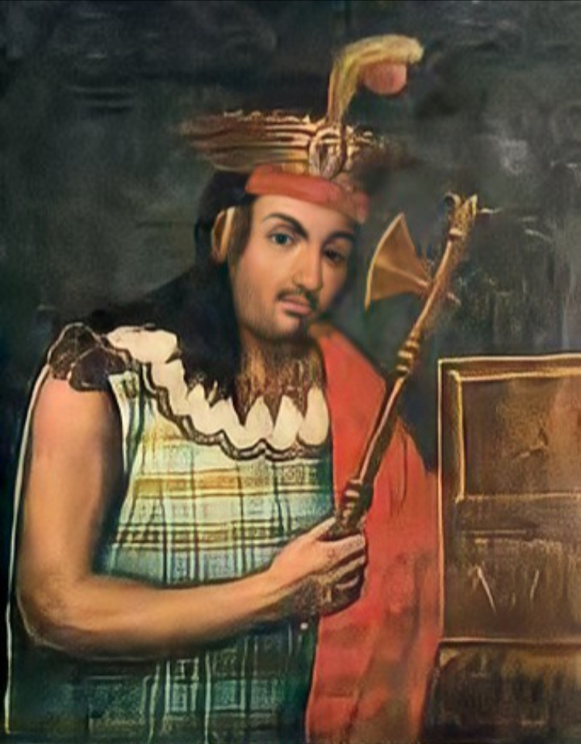

Cuarto gobernante del Imperio Inca, hijo de Lloque Yupanqui y Mama Cora Ocllo.
Su gobierno se estima alrededor del año 1290 d.C., recordado por su fortaleza y liderazgo militar.
Inició las primeras campañas de expansión hacia el sur del Cusco, extendiendo los dominios del imperio.
Fue considerado un gran organizador y uno de los primeros en consolidar la autoridad del Sapa Inca.